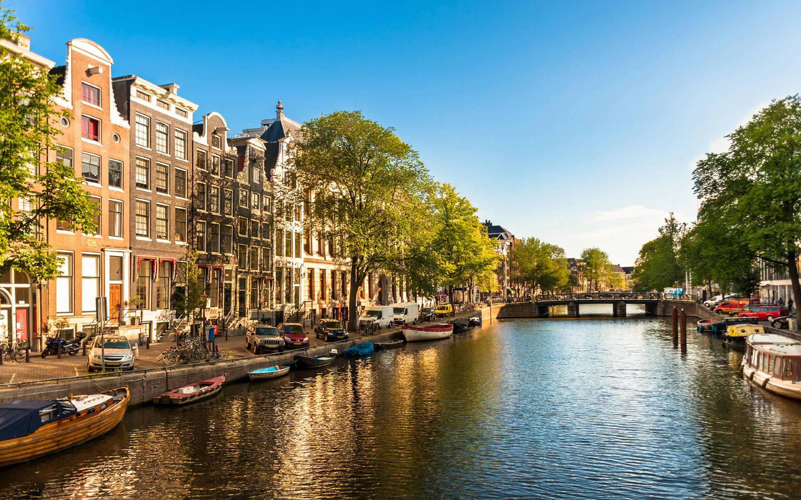
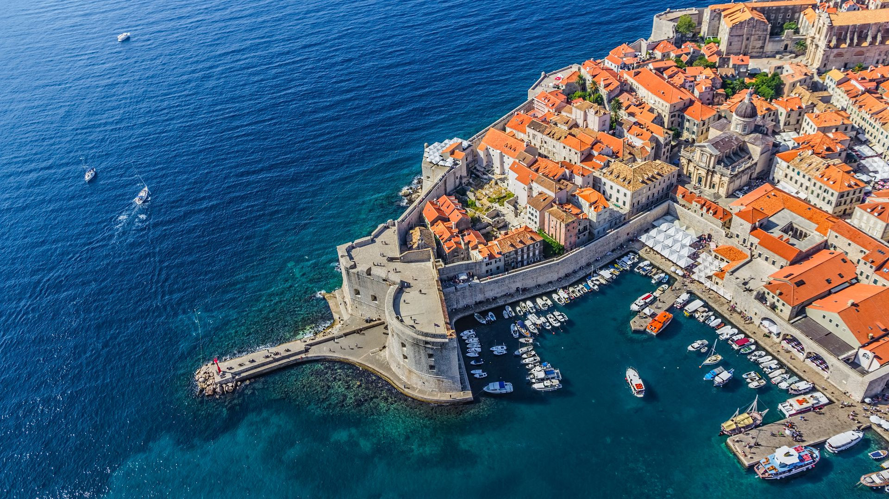
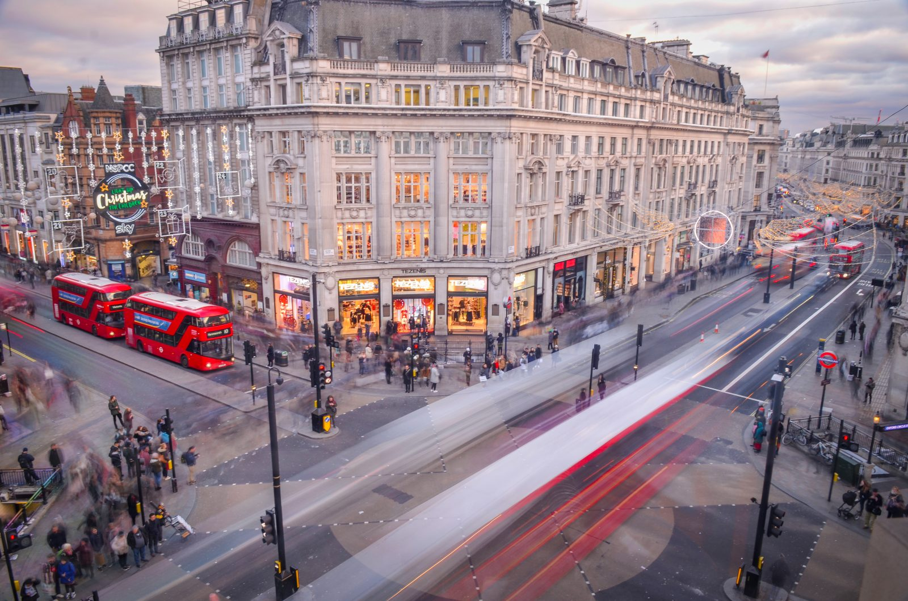

EUROPSKA PUTOVANJA
Europska putovanja savršen su izbor za istraživanje bogate povijesti, umjetnosti i kulture na dohvat ruke. Atlas Tour nudi širok spektar putovanja diljem Europe – od romantičnih prijestolnica i povijesnih gradova do slikovitih krajolika i skrivenih dragulja. Svaka destinacija priča svoju jedinstvenu priču, a naši programi osmišljeni su tako da pruže ravnotežu između organiziranih razgledavanja i slobodnog vremena za osobna otkrića. Europska putovanja s Atlas Tourom omogućuju vam da upoznate različite običaje, kuhinje i stilove života, uz ugodnu i bezbrižnu organizaciju.

Amsterdam
Amsterdam je grad kanala, umjetnosti i opuštene atmosfere, koji osvaja svojom autentičnošću i šarmom. Povijesne kuće uz vodu, slikoviti mostovi i bicikli na svakom koraku stvaraju prepoznatljivu kulisu ovog nizozemskog grada. Atlas Tour vodi vas kroz najpoznatije znamenitosti poput muzeja svjetske klase, živopisnih trgova i kulturnih četvrti, ali i omogućuje slobodno vrijeme za istraživanje grada vlastitim ritmom. Amsterdam je idealna destinacija za putnike koji žele spoj kulture, povijesti i modernog načina života.
10 dana busom
650 EUR

Dubrovnik
Dubrovnik, biser Jadrana, grad je iznimne ljepote i bogate povijesti. Njegove impozantne zidine, kamene ulice i pogled na kristalno čisto more ostavljaju snažan dojam na svakog posjetitelja. Atlas Tour nudi putovanja koja omogućuju detaljno upoznavanje povijesne jezgre, ali i vrijeme za opuštanje uz more i uživanje u dalmatinskoj gastronomiji. Dubrovnik je idealna destinacija za one koji žele spoj kulture, mora i mediteranskog ugođaja.
5 dana busom
410 EUR

London
London je dinamična metropola u kojoj se tradicija i suvremenost savršeno isprepliću. Povijesne znamenitosti poput Buckinghamske palače i Tower Bridgea stoje uz moderne četvrti, kazališta i svjetski poznate muzeje. Putovanje u London s Atlas Tourom omogućuje vam upoznavanje bogate britanske povijesti, raznolike kulture i živahnog urbanog života. London nudi bezbroj mogućnosti za istraživanje, zabavu i autentične gradske doživljaje.
7 dana zrakoplovom
1.500 EUR
Pariz
Pariz, grad svjetla i romantike, simbol je umjetnosti, mode i bezvremenske elegancije. Šetnja uz Seinu, pogled s Eiffelovog tornja i posjet svjetski poznatim muzejima stvaraju jedinstven doživljaj svakog putovanja. Atlas Tour vodi vas kroz najpoznatije pariške znamenitosti, ali i skrivene kutke grada koji odišu šarmom i poviješću. Pariz je savršen izbor za one koji žele spoj kulture, romantike i nezaboravne atmosfere.
10 dana zrakoplovom
1.750 EUR